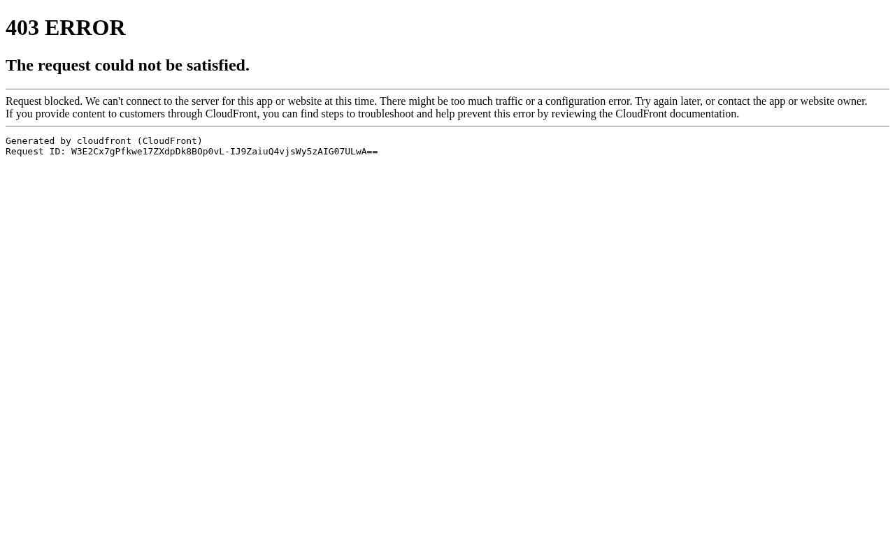

Design System Report
Ferrari — CSS 파싱 데이터 없음
ferrari.com은 정적 CSS 파싱으로 어떤 chromatic 컬러도, font-family도 감지되지 않았다. 극도로 절제된 레이아웃 — 그리고 레드는 로고와 핵심 accent에만 나타난다.

Quick Start
5분 안에 Ferrari처럼 만들기 — 3가지만 하면 80%
1 · 폰트 (시각 관찰)
body {
font-family:
"Neue Haas Grotesk",
"Helvetica Neue",
Helvetica, Arial,
sans-serif;
font-weight: 400;
}
2 · 배경 + 텍스트
:root {
--bg: #FFFFFF;
--fg: #1A1A1A;
}
body {
background: var(--bg);
color: var(--fg);
}
3 · Rosso Corsa (브랜드)
:root {
/* 브랜드 가이드 기반 */
/* CSS 미확인 */
--brand: #DA0000;
}
절대 하지 말아야 할 것: Ferrari 레드를 UI 전반에 과용하는 것. CSS 파싱에서 어떤 chromatic 컬러도 감지되지 않을 만큼 레드는 극도로 절제되어 있다. 레드는 로고와 핵심 accent에만.
Default Theme
Light
시각 관찰 기반
Brand Color
#DA0000
Rosso Corsa (브랜드 가이드)
CSS Data
없음
정적 파싱 한계
Font (CSS)
미감지
JS 렌더링 추정
01
출처와 수집 기준
CSS 커스텀 프로퍼티를 직접 파싱했으나 Ferrari 사이트는 정적 파싱으로 데이터가 추출되지 않았다.
Source URL
https://ferrari.comFetched2026-04-13
Extractorcurl + Chrome UA (5-tier fallback)
Token prefixN/A — 커스텀 프로퍼티 시스템 미감지
MethodCSS 커스텀 프로퍼티 직접 파싱 · AI 추론 없음
한계고도로 인라인화 또는 JS 렌더링 — 정적 CSS 파싱 제한
데이터 없음 경고: ferrari.com CSS 파싱 결과 chromatic 컬러 후보 0개, font-family 0개. 이 리포트의 색상과 폰트 정보는 공개 브랜드 가이드라인 기반이며 CSS 데이터로 확인되지 않았다.
#DA0000은 Rosso Corsa 브랜드 레드이나 CSS 미확인.
02
컬러
CSS 파싱 데이터 없음. 아래 값은 공개 브랜드 가이드라인 기반 참고값이며 CSS에서 확인되지 않았다.
Rosso Corsa + Monochrome (브랜드 가이드 참고)
Rosso Corsa#DA0000
White (추정)#FFFFFF
Near-black (추정)#1A1A1A
중요: 위 컬러는 CSS 파싱 데이터가 아니다.
#DA0000은 Ferrari의 공개 브랜드 레드(Rosso Corsa)이나 실제 사이트 CSS에서 확인되지 않았다. 이 값을 확정적으로 사용하지 말 것.
03
컴포넌트
CSS 데이터가 없으므로 시각 관찰 기반 추정. 실제 클래스명·토큰은 확인 불가.
Hero 패턴 (시각 관찰): 차량 전체 폭 영상/사진 → 그라디언트 오버레이(어두운→투명) → H1 흰 텍스트 → Discover / Configure CTA 버튼. CTA는
#DA0000 배경 또는 transparent + white border 패턴으로 보임. 실제 CSS 확인 불가.
04
CSS 스니펫
CSS 파싱 데이터가 없어 브랜드 가이드라인 기반 추정값이다. 사용 시 주의.
/* Ferrari — copy into your root stylesheet */
/* ⚠️ CSS 파싱 데이터 없음. 브랜드 가이드라인 기반 추정값 */
:root {
/* Fonts (CSS 미감지 — 시각 관찰 기반) */
--ferrari-font-family: "Neue Haas Grotesk", "Helvetica Neue",
Helvetica, Arial, sans-serif;
--ferrari-font-weight-normal: 400;
--ferrari-font-weight-bold: 700;
/* Brand (공개 브랜드 가이드 — CSS 미확인) */
--ferrari-color-rosso-corsa: #DA0000;
/* Surfaces (추정) */
--ferrari-bg-page: #FFFFFF;
--ferrari-bg-dark: #1A1A1A;
--ferrari-text: #1A1A1A;
--ferrari-text-on-dark: #FFFFFF;
}
05
Do / Don't
Ferrari 디자인 철학 — CSS 데이터 없이 관찰 가능한 원칙.
✓ DO
- Ferrari 레드를 로고, 주요 CTA에만 절제적으로 사용
- Hero는 차량 전체 폭 고화질 사진/영상으로 채우기
- 레이아웃 최대한 여백 넓게, 그리드 정교하게
- 모델명을 그대로 headline으로 사용
✗ DON'T
- Ferrari 레드를 배경 전체에 쓰지 말 것
- 과장된 마케팅 문구 쓰지 말 것
- CSS 데이터 없는 값을 확정적으로 사용하지 말 것
- 레이아웃을 복잡하게 만들지 말 것 — 미니멀이 핵심